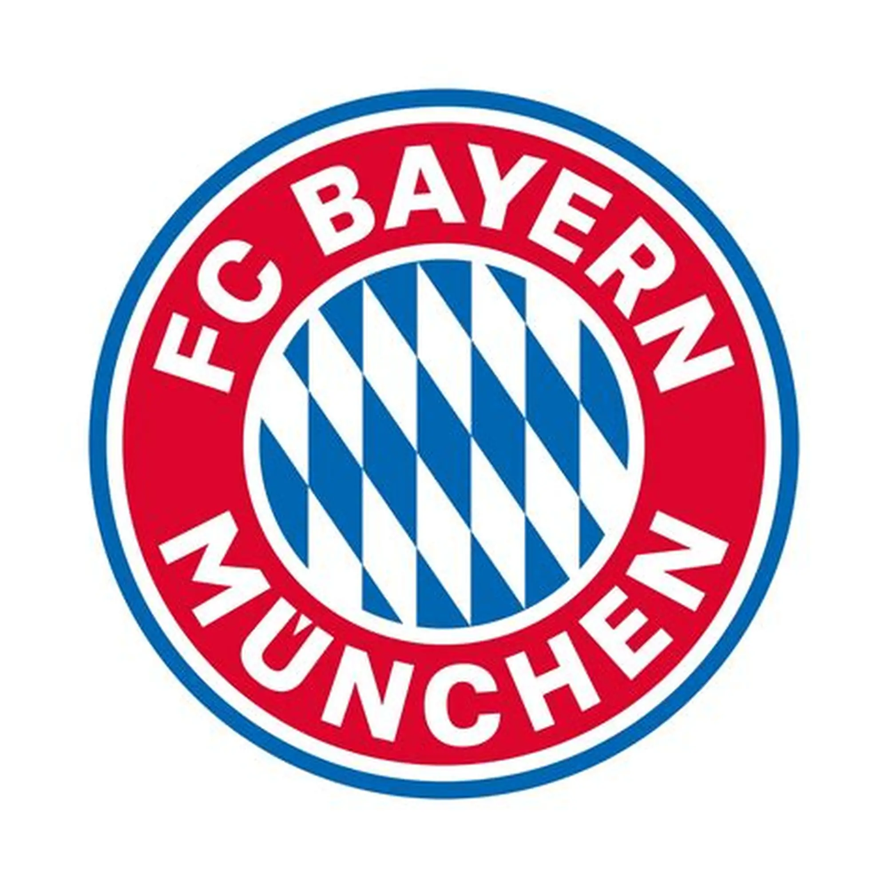

El Bayern Múnich es uno de los clubes más importantes y exitosos del fútbol mundial. Fundado en 1900 en Alemania, se destaca por su dominio en la Bundesliga y por sus múltiples títulos internacionales, incluyendo la UEFA Champions League.
Con sede en el moderno estadio Allianz Arena, el Bayern es reconocido por su estilo de juego ofensivo, su disciplina táctica y su capacidad para desarrollar y atraer grandes talentos del fútbol mundial.